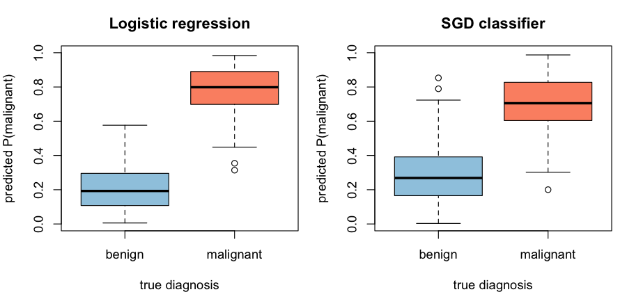

library(DSI); library(DSOpal); library(dsBaseClient); library(dsFlowerClient)Federated machine learning with dsFlower
Two clinical models trained across three hospitals — no patient record ever leaves a site
Download the R script (.R) Source (.Rmd)
Welcome
So far in this workshop you have used DataSHIELD to compute summary statistics and regression models (ds.glm) across federated sites. This tutorial goes one step further: it trains machine-learning models with Flower — a popular federated-learning framework — underneath DataSHIELD, using the dsFlower package.
We keep things light and clinical: one well-understood dataset (breast-cancer diagnosis) and two simple models, so we can focus on how federated learning works rather than on heavy computation.
ImportantWhat makes this special
No record ever leaves its hospital. Each site trains on its own patients and shares only model updates, and those updates are combined with Secure Aggregation — cryptographically masked, so not even the researcher running the training can inspect any single hospital’s contribution. And the whole Flower conversation now travels through the DataSHIELD channel itself: no extra ports, no VPN, no public address to open.
1. Connect to the three hospitals
We log in to three Opal servers (nairobi, dakar, douala) and load the breast-cancer table on each.
builder <- DSI::newDSLoginBuilder()
for (h in c("nairobi", "dakar", "douala")) {
builder$append(server = h, url = paste0("https://", h, ".datashield.live"),
user = "ethiopia", password = "P@ssw0rd")
}
conns <- DSI::datashield.login(logins = builder$build())
DSI::datashield.assign.table(conns, "D", "dsflower_demo.breast_cancer")2. The data — explored without ever seeing it
What is this dataset?
The Breast Cancer Wisconsin (Diagnostic) dataset is a classic in medical machine learning. Each row is one patient who had a fine-needle aspiration (FNA) of a breast mass. A digitised image of the cell nuclei was analysed to produce 30 numeric features: ten morphology measurements of the nuclei —
radius, texture, perimeter, area, smoothness, compactness, concavity, concave points, symmetry, fractal dimension
— each summarised three ways (its mean, its standard error, and its “worst”/largest value across the nuclei). The label malignant is 1 for a malignant (cancerous) tumour and 0 for a benign one. The task: predict malignancy from the morphology of the cell nuclei.
In this workshop the 569 patients are split across the three hospitals, and no hospital shares its raw rows — we only ever see aggregate, disclosure-controlled views.
How many patients, and how balanced?
ds.dim("D", datasources = conns) # rows per hospital + pooled total#> $`dimensions of D in nairobi`
#> [1] 190 31
#>
#> $`dimensions of D in dakar`
#> [1] 190 31
#>
#> $`dimensions of D in douala`
#> [1] 189 31
#>
#> $`dimensions of D in combined studies`
#> [1] 569 31ds.table("D$malignant", datasources = conns) # benign (0) vs malignant (1)#> Data in all studies were valid
#>
#> D$malignant
#> 0 1
#> 357 212Each hospital holds ~190 patients (569 pooled, 357 benign / 212 malignant), and every site has both classes.
Do the features actually separate the two groups?
A federated comparison of one of the most discriminative features — worst_concave_points — between benign and malignant tumours. The group means and SDs are computed across all three hospitals’ patients without any row leaving a site:
ds.asFactor("D$malignant", "mal_f", datasources = conns)
sep <- ds.meanSdGp(x = "D$worst_concave_points", y = "mal_f",
type = "combine", datasources = conns)
data.frame(
diagnosis = c("benign", "malignant"),
mean_worst_concave_points = round(as.numeric(sep$Mean_gp), 4),
sd = round(as.numeric(sep$StDev_gp), 4),
n = as.integer(sep$Nvalid_gp)
)#> diagnosis mean_worst_concave_points sd n
#> 1 benign 0.0744 0.0359 357
#> 2 malignant 0.1822 0.0464 212Malignant tumours have more than double the “worst concave points” of benign ones — the features carry strong signal, so even a simple model should separate the classes well.
bc_features <- setdiff(ds.colnames("D", datasources = conns)[[1]], "malignant")
length(bc_features) # 30 predictors#> [1] 303. Model 1 — Logistic regression
Time to train. ds.flower.link.up() opens the federated learning link: it starts a local Flower SuperLink on your machine and connects each hospital to it through the DataSHIELD channel — no public address, VPN or extra setup.
ds.flower.link.up(conns)Connecting your machine to the federation (this can take ~1 min)...
Federation ready: 3 sites connected.Our first model is a logistic regression: a linear classifier that estimates the probability a tumour is malignant. We train it with federated averaging and Secure Aggregation (the clinical_default privacy profile). Watch the log — each round masks and combines the three hospitals’ updates:
fit_lr <- ds.flower.fit(
conns, symbol = "D", target = "malignant", features = bc_features,
model = "sklearn_logreg",
strategy = "fedavg",
privacy = "clinical_default", # Secure Aggregation
rounds = 2L, verbose = TRUE
)
fit_lr nairobi: SuperNode connected
dakar: SuperNode connected
douala: SuperNode connected
Code verification passed on all servers
INFO : [INIT]
INFO : Requesting initial parameters from one random client
INFO : Received initial parameters from one random client
INFO :
INFO : [ROUND 1]
INFO : Secure aggregation commencing.
INFO : configure_fit: strategy sampled 3 clients (out of 3)
INFO : aggregate_fit: received 3 results and 0 failures
INFO : Secure aggregation completed.
INFO :
INFO : [ROUND 2]
INFO : Secure aggregation commencing.
INFO : configure_fit: strategy sampled 3 clients (out of 3)
INFO : aggregate_fit: received 3 results and 0 failures
INFO : Secure aggregation completed.
INFO :
INFO : [SUMMARY]
INFO : Run finished 2 round(s) in 128.4s
Federated Learning Run
Model ID: sklearn_logreg_FedAvg_2r
Model: sklearn_logreg
Strategy: FedAvg
Rounds: 2
Status: success
Global model weights: 2 parameter arrays
coef: 1 x 30
intercept: 1ds.flower.link.down(conns) # the link is only needed while training4. Model 2 — a stochastic-gradient classifier
The second model is an SGD classifier — also a linear classifier, but fit by stochastic gradient descent instead of in closed form: rather than solving for the best weights directly, it nudges them with each pass over the data. It is a nice contrast in how a model is learned, while staying light enough to train on a few hundred patients per site under Secure Aggregation.
ds.flower.link.up(conns)
fit_sgd <- ds.flower.fit(
conns, symbol = "D", target = "malignant", features = bc_features,
model = "sklearn_sgd",
strategy = "fedavg",
privacy = "clinical_default", # Secure Aggregation
rounds = 2L, verbose = TRUE
)
fit_sgd
ds.flower.link.down(conns) nairobi: SuperNode connected
dakar: SuperNode connected
douala: SuperNode connected
Code verification passed on all servers
INFO : [INIT]
INFO : Requesting initial parameters from one random client
INFO : Received initial parameters from one random client
INFO :
INFO : [ROUND 1]
INFO : Secure aggregation commencing.
INFO : aggregate_fit: received 3 results and 0 failures
INFO : Secure aggregation completed.
INFO :
INFO : [ROUND 2]
INFO : Secure aggregation commencing.
INFO : aggregate_fit: received 3 results and 0 failures
INFO : Secure aggregation completed.
INFO :
INFO : [SUMMARY]
INFO : Run finished 2 round(s) in 141.7s
Federated Learning Run
Model ID: sklearn_sgd_FedAvg_2r
Model: sklearn_sgd
Strategy: FedAvg
Rounds: 2
Status: success
Global model weights: 2 parameter arrays
coef: 1 x 30
intercept: 15. Predict and validate the models
The trained models now live on your machine (only masked aggregates ever crossed the wire). To see how well they predict, we apply them to data.
The hospitals’ rows are private and cannot be downloaded, so for this demonstration we use a local, public copy of the same Breast Cancer Wisconsin cohort as our example set — we can visualise individual cases and check the predictions against the known diagnoses.
bc <- read.csv("https://raw.githubusercontent.com/isglobal-brge/workshop_DSWB/main/data/breast_cancer_public.csv")
dim(bc)
table(diagnosis = ifelse(bc$malignant == 1, "malignant", "benign"))#> [1] 569 31
#> diagnosis
#> benign malignant
#> 357 212Predict with both models
ds.flower.predict() returns a malignancy probability (type = "prob") or a 0/1 class (type = "response"):
X <- bc[, bc_features]
p_lr <- ds.flower.predict(fit_lr, X, type = "prob")
p_sgd <- ds.flower.predict(fit_sgd, X, type = "prob")
head(data.frame(
actual = bc$malignant,
P_malig_logreg = round(p_lr, 3),
P_malig_sgd = round(p_sgd, 3)
), 8)#> actual P_malig_logreg P_malig_sgd
#> 1 1 0.726 0.475
#> 2 1 0.660 0.403
#> 3 1 0.956 0.359
#> 4 1 0.624 0.676
#> 5 1 0.740 0.721
#> 6 1 0.655 0.528
#> 7 1 0.935 0.598
#> 8 1 0.836 0.717How separable are the predictions?
A good classifier pushes benign cases toward probability 0 and malignant cases toward 1. Here is each model’s score, split by the true diagnosis:
op <- par(mfrow = c(1, 2))
for (m in list(c("Logistic regression", "p_lr"), c("SGD classifier", "p_sgd"))) {
boxplot(get(m[2]) ~ bc$malignant, names = c("benign", "malignant"),
col = c("#9ecae1", "#fc9272"), ylab = "predicted P(malignant)",
xlab = "true diagnosis", main = m[1], ylim = c(0, 1))
}
par(op)
Accuracy and confusion matrices
report <- function(prob, truth, name) {
pred <- as.integer(prob >= 0.5)
cm <- table(predicted = pred, actual = truth)
cat("\n==", name, "==\n"); print(cm)
cat(sprintf("accuracy: %.1f%%\n", 100 * mean(pred == truth)))
}
report(p_lr, bc$malignant, "Logistic regression")
report(p_sgd, bc$malignant, "SGD classifier")== Logistic regression ==
actual
predicted 0 1
0 345 9
1 12 203
accuracy: 96.3%
== SGD classifier ==
actual
predicted 0 1
0 319 24
1 38 188
accuracy: 89.1%
Note
This public copy is the same well-known cohort the hospitals hold, so the numbers above reflect fit rather than out-of-sample generalisation — in a real study you would validate on a separate, held-out test set. The point here is the workflow: train privately across sites, then use the portable model to predict and visualise.
6. Wrap up
DSI::datashield.logout(conns)What just happened
- Three hospitals, shared models. Both classifiers were trained on the pooled population of 569 patients that no one was ever able to pool — each site kept its rows.
- Secure Aggregation. The per-site updates were cryptographically masked; not even the researcher could see any single hospital’s contribution.
- Through DataSHIELD. Flower’s entire SuperNode↔︎SuperLink conversation travelled inside the DataSHIELD channel — no extra ports, no VPN, no public address.
- Privacy shapes the model. Cohort-size rules kept us to light linear models; a neural network would have needed far more patients per site — a feature, not a bug.
Two light linear models were enough to tell malignant from benign with high accuracy. The same ds.flower.fit() call scales up to neural networks and gradient boosting when the cohorts are large enough to allow them.